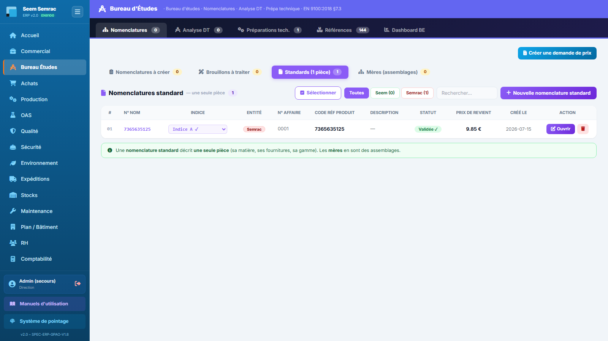
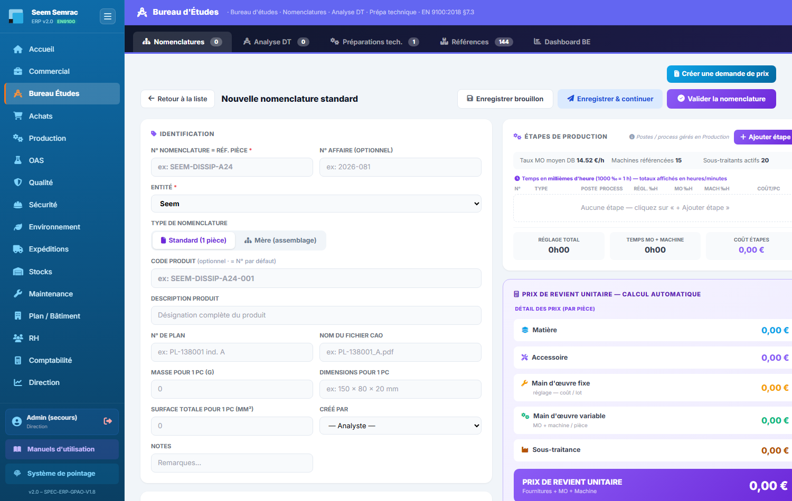
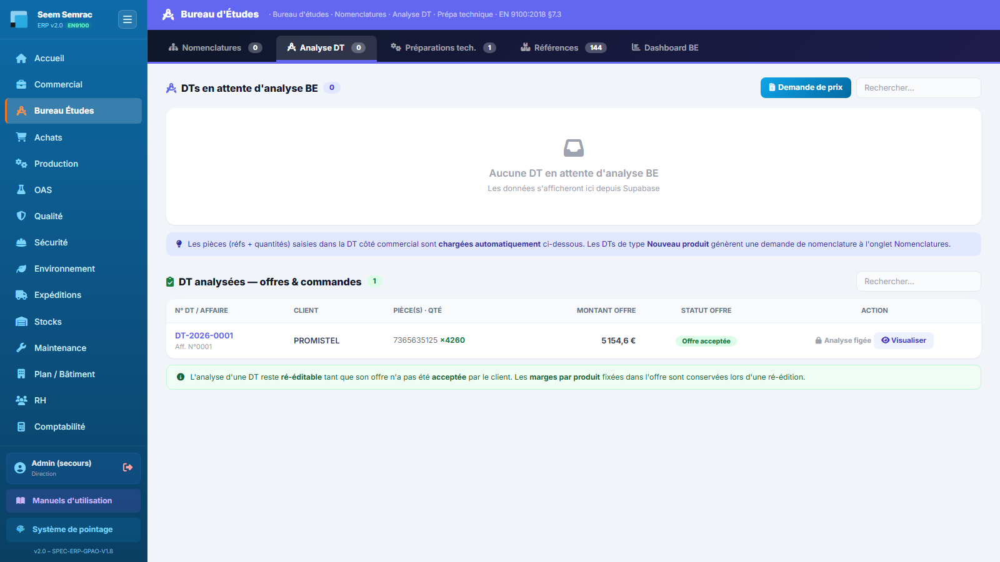
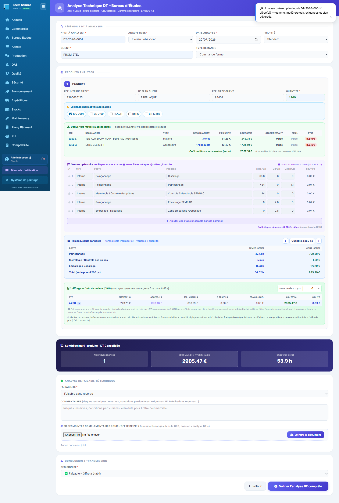
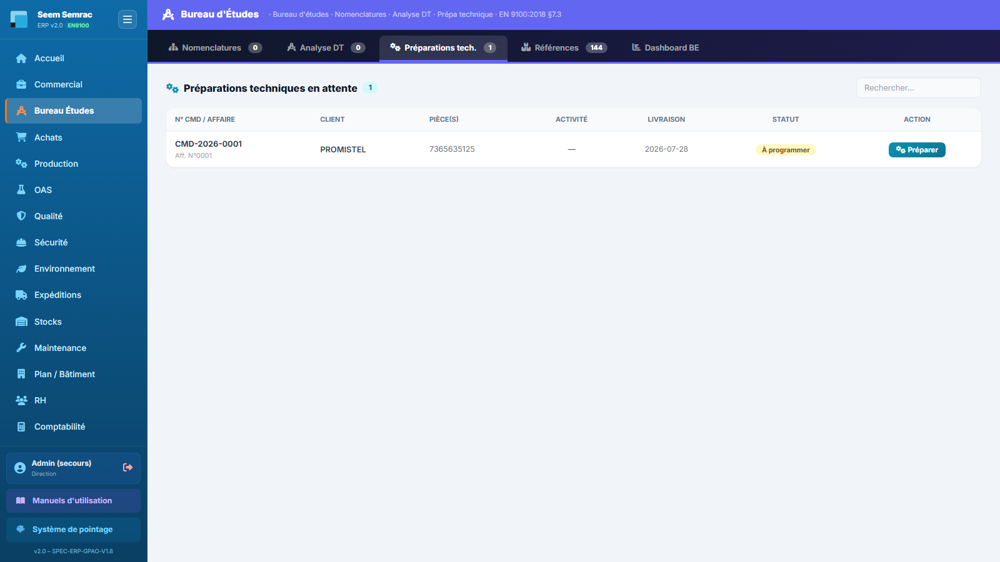
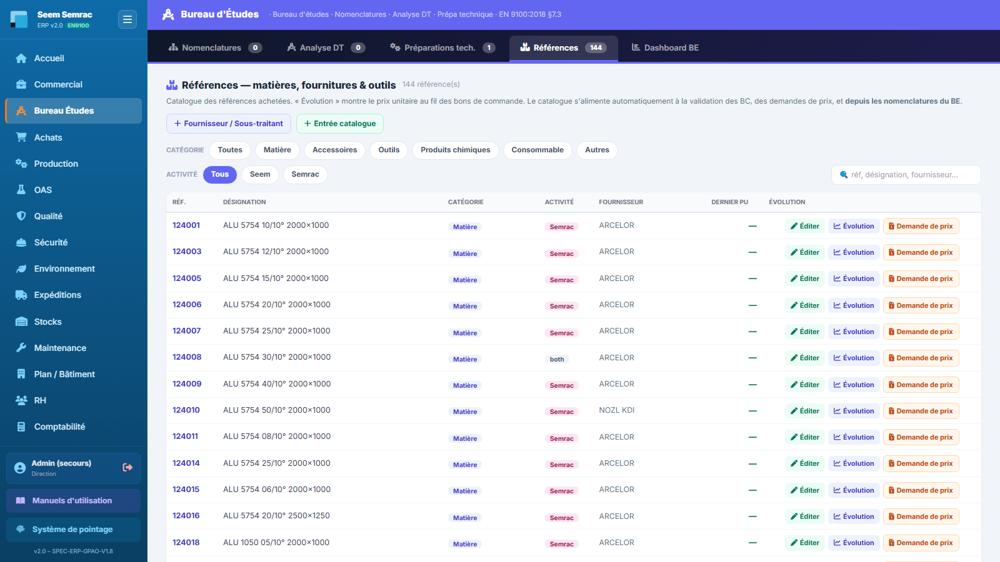
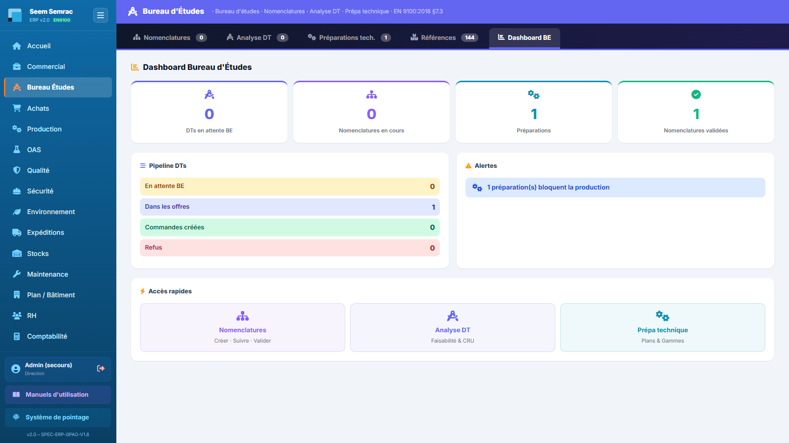

Le Bureau d'Études définit techniquement les pièces : il crée les nomenclatures (matière, accessoires, gamme d'opérations), analyse les Demandes de Travaux (DT) transmises par le commercial pour calculer le coût de revient, prépare les programmes CN et tient le catalogue des références achetées. Ce manuel décrit chaque onglet et les procédures pas à pas.
👤 Pour qui : Technicien(ne) BE (écriture : BE, Achats)🧭 Dans l'ERP : Sidebar → Bureau Études🗂 5 onglets
1
Nomenclatures
À quoi ça sert. La nomenclature est la carte d'identité de fabrication d'une pièce : sa matière, ses accessoires, sa gamme d'opérations et son prix de revient calculé automatiquement. C'est ici que le BE crée les nomenclatures demandées par les DT « Nouveau produit », complète les brouillons, et fait vivre les révisions (indices A, B, C…). Sans nomenclature validée, l'analyse BE d'une DT ne peut pas chiffrer la pièce.
Ce que vous voyez
L'onglet s'ouvre sur quatre sous-onglets, avec en haut à droite un bouton « Créer une demande de prix » (envoi d'articles à chiffrer au service Achats) :
Nomenclatures à créer — bandeau jaune « Nomenclatures à faire (depuis DT validées) » : chaque DT en attente de nomenclature y apparaît avec son client, son type, sa priorité, et un bouton par pièce à nomencler (réf × quantité). Le compteur du sous-onglet totalise les pièces restant à créer.
Brouillons à traiter — les nomenclatures non validées (colonnes : N° NOM, Indice, Entité, N° Affaire, Code Réf, Description, Type, Créé le), avec les boutons Terminer et Supprimer. Un brouillon n'apparaît pas dans Standards/Mères tant qu'il n'est pas validé.
Standards (1 pièce) — les nomenclatures validées décrivant une seule pièce. Colonnes : #, N° NOM, Indice (liste déroulante des révisions), Entité, N° Affaire, Code Réf Produit, Description, Statut, Prix de revient, Créé le, Action (Ouvrir / Supprimer). Filtres Toutes / Seem / Semrac, champ de recherche, sélection multiple pour suppression groupée, bouton « + Nouvelle nomenclature standard ».
Mères (assemblages) — les nomenclatures qui assemblent des standards (colonne Composants = nombre de standards). Bouton « + Nouvelle mère ». Le prix de revient d'une mère est la somme de ses composants.
Statuts d'une nomenclature : BrouillonEn coursValidée ✓. L'entité est signalée par un badge Seem ou Semrac.

Onglet Nomenclatures — les quatre sous-onglets (À créer / Brouillons / Standards / Mères), le bandeau des pièces à nomencler issues des DT validées et la liste des standards avec leur indice.
Pas à pas — créer une nomenclature depuis une DT
Sous-onglet Nomenclatures à créer : repérez la DT concernée, puis cliquez le bouton de la pièce à nomencler (ex. + REF-PIECE ×10). Le formulaire s'ouvre pré-rempli (N° affaire, réf. pièce, n° de plan) — une notification le confirme.
Ajoutez la Matière (tôle) : saisissez la réf. matière (ou la désignation) — la liste propose le catalogue existant. Le fournisseur qui porte cette réf se sélectionne tout seul s'il est unique. Le prix tôle s'affiche automatiquement s'il date de moins de 6 mois ; sinon un bouton « demande de prix » l'envoie aux Achats (un bouton « vérifier » apparaît ensuite pour récupérer la réponse). Renseignez Pc/tôle : le prix matière par pièce = prix tôle ÷ pièces par tôle.
Ajoutez les Accessoires (visserie, composants…) : réf catalogue, fournisseur, prix paquet (mêmes règles de fraîcheur de prix), quantité par paquet et nombre par pièce. Prix accessoire / pièce = (prix paquet ÷ qté par paquet) × nb par pièce.
Construisez la gamme (« Étapes de production ») : pour chaque étape, choisissez le Type (Interne ou Sous-traité), puis le Poste d'atelier et le Process du poste (la machine liée et son taux horaire se renseignent seuls ; un process manuel n'a pas de temps machine). Saisissez les temps en millièmes d'heure (1000 ‰ = 1 h) : réglage, MO, machine. Réordonnez les étapes par glisser-déposer — cet ordre devient la séquence de fabrication des BDT.
Pour une étape sous-traitée : choisissez le sous-traitant puis l'opération — le prix unitaire pièce et le forfait de son tarif s'appliquent automatiquement.
Vérifiez le panneau « Prix de revient unitaire — Calcul automatique » : matière, accessoire, MO fixe (réglage / lot), MO variable, sous-traitance, et le total. Le bloc « Estimation commande » simule le coût pour une quantité : le réglage n'est compté qu'une fois par lot et la sous-traitance applique le forfait plancher (max entre forfait et qté × prix unitaire).
Enregistrez : Brouillon (retrouvable dans « Brouillons à traiter »), Enregistrer & continuer (statut En cours), ou Valider la nomenclature. Le N° de nomenclature est obligatoire pour enregistrer.
À la validation d'une nomenclature créée depuis une DT, la DT bascule automatiquement « en attente BE » : l'analyse (onglet Analyse DT) est débloquée.
Pas à pas — créer une nomenclature mère (assemblage)
Sous-onglet Mères, cliquez « + Nouvelle mère » (ou basculez le type sur « Mère (assemblage) » dans le formulaire).
Dans le bloc Composants, cliquez « Ajouter un standard » puis choisissez chaque nomenclature standard et sa quantité. Le total des composants s'affiche en direct.
Les compartiments matière/accessoires disparaissent (une mère n'a pas de fournitures propres) : son prix de revient est la somme de ses standards.
Enregistrez puis validez, comme pour une standard.
Pas à pas — créer une révision (indice)
Depuis la liste : la colonne Indice est une liste déroulante qui montre toutes les révisions du produit. Choisissez « ➕ Créer indice B… » (ou C, D…) : la nouvelle révision clone la dernière, l'ancienne est conservée et reste ouvrable via la même liste.
Depuis le formulaire d'une nomenclature enregistrée : le bandeau violet « Indice actuel » propose « Incrémenter l'indice → B ». Confirmez : la révision précédente est conservée telle quelle.
Le formulaire nomenclature, champ par champ (Identification)
Champ
Saisie
Obligatoire
Explication
N° Nomenclature = réf. pièce
Texte (ex. SEEM-DISSIP-A24)
Oui
Identifiant de la nomenclature ; c'est la référence interne de la pièce.
N° Affaire
Texte (ex. 2026-081)
Non
Rattache la nomenclature à une affaire ; vide = nomenclature « libre ».
Entité
Seem / Semrac
Oui
Filtre les fournisseurs, postes et process proposés dans le reste du formulaire.
Type de nomenclature
Standard (1 pièce) / Mère (assemblage)
Oui (Standard par défaut)
Une mère assemble des standards ; ses fournitures propres sont masquées.
Code produit
Texte
Non
Par défaut égal au N° de nomenclature.
Description produit
Texte
Non
Désignation complète du produit.
N° de plan
Texte (ex. PL-138001 ind. A)
Non
Référence du plan de la pièce.
Nom du fichier CAO
Texte (ex. PL-138001_A.pdf)
Non
Se remplit seul si vous joignez le plan CAO en GED.
Masse pour 1 pc (g)
Nombre
Non
Saisie en grammes (stockée en kg côté base).
Dimensions pour 1 pc
Texte (ex. 150 × 80 × 20 mm)
Non
Encombrement de la pièce.
Surface totale pour 1 pc (mm²)
Nombre
Non
Surface développée : sert au calcul de charge des balancelles OAS.
Créé par
Liste des analystes BE
Non
Auteur de la nomenclature.
Notes
Texte
Non
Remarques libres.
Sous l'identification, deux blocs complètent la fiche : « Clients & réfs de cette pièce » (le répertoire réf interne ↔ réf client ↔ plan, alimenté automatiquement par les DT validées, avec ajout manuel possible) et « Documents (GED) » pour joindre le plan client, le plan CAO et les programmes FAO par étape machine.

Formulaire nomenclature — à gauche identification + fournitures (matière / accessoires), à droite la gamme en millièmes d'heure et le prix de revient calculé automatiquement.
Règles & points d'attention
Temps en millièmes d'heure : 1000 ‰ = 1 h. Les totaux s'affichent en heures/minutes.
Le réglage est un coût fixe par lot : il n'est jamais multiplié par la quantité produite (la machine se règle une fois, qu'on fasse 1 ou 10 000 pièces).
Prix fournisseurs pilotés par le catalogue : un prix n'est appliqué que s'il date de moins de 6 mois ; au-delà (ou s'il est absent), passez par la demande de prix — pas de saisie manuelle du prix matière/accessoire.
Postes et process se gèrent dans Production → « Postes & Process » : la gamme ne fait que les choisir.
Une nomenclature ouverte par un collègue est verrouillée : une notification vous indique qui la modifie ; patientez, la liste se met à jour en direct (rafraîchissement automatique toutes les ~7 secondes hors édition).
Les champs « N° programme machine / fichier programme » n'apparaissent dans la gamme que pour les étapes sur machine CNC.
Attention : la suppression d'une nomenclature est irréversible (une confirmation est demandée). Pour faire évoluer une pièce, préférez toujours créer un nouvel indice : l'ancienne révision reste consultable.
Astuce : le bouton « Créer une demande de prix » en haut de l'onglet accepte plusieurs articles d'un coup — l'ERP crée une demande par référence et les envoie dans Achats → « Demandes de prix ». Le prix officiel du catalogue est mis à jour à la validation de la réponse.
2
Analyse DT (page /be/analyse)
À quoi ça sert. Quand le commercial valide une DT, elle arrive ici pour l'analyse technique : faisabilité, gamme, couverture matière et calcul du coût de revient unitaire (CRU). Le résultat alimente directement l'offre de prix côté commercial. L'onglet liste les DT à analyser et celles déjà analysées ; le bouton Analyser ouvre la page d'analyse complète.
Ce que vous voyez
Deux tableaux et un bouton « Demande de prix » :
DTs en attente d'analyse BE — colonnes : N° DT / Affaire, Client, Pièce(s) · Qté, Type DT (Nouveau produit / Maj produit / Maj prix), Priorité (critiqueurgentnormal), Date DT, Analyste, et deux actions : Analyser (ouvre la page /be/analyse pré-remplie) et Visualiser (œil).
DT analysées — offres & commandes — colonnes : N° DT / Affaire, Client, Pièce(s) · Qté, Montant offre, Statut offre (Offre en coursOffre acceptéeCommande crééePas d'offre). Tant que l'offre n'est pas acceptée : bouton « Ré-éditer l'analyse ». Offre acceptée ou commande créée : l'analyse est figée (cadenas), seul Visualiser reste disponible.
Le bouton œil « Visualiser » ouvre un panneau en LECTURE SEULE (le badge l'indique) : la décomposition auto-calculée depuis les nomenclatures validées — par pièce : réf. interne, nomenclature, quantité, matière, MO (réglage inclus), machine, sous-traitance (forfait minimum inclus), total série et € / pièce. Aucune modification possible depuis cette vue : pour éditer, passez par « Analyser ».

Onglet Analyse DT — en haut les DT en attente avec les boutons « Analyser » et « Visualiser » (œil, lecture seule) ; en dessous les DT déjà analysées avec leur statut d'offre.
La page d'analyse /be/analyse en détail
Ouverte via Analyser, la page charge automatiquement la DT : entête, pièces, quantités, exigences et plan sont déversés (une notification le confirme). Elle se compose, de haut en bas :
Référence DT à analyser — N° DT et Client sont pré-remplis et verrouillés ; vous renseignez : Analyste BE (obligatoire, liste des salariés habilités BE), Date analyse, Priorité (Standard / Urgent / Critique), Type demande (Commande ferme / Prototype / Essai / Réclamation).
Produits analysés — un bloc par pièce de la DT, avec le triplet lié : Réf. interne pièce ↔ N° plan client ↔ Réf. pièce client. Saisir l'une des trois remplit les cases vides depuis le répertoire des références clients ; un lien « Ouvrir le plan client » apparaît si le plan est en GED. La quantité vient de la DT (verrouillée).
Exigences normatives — cases à cocher identiques à la DT : ISO 9001, EN 9100, REACH, RoHS, EN 13485.
Couverture matière & accessoires — pour chaque fourniture de la nomenclature : besoin exprimé en unités d'achat entières (tôles / paquets, arrondi supérieur), prix unité (ou « à chiffrer » si aucun prix récent), coût série, stock restant, seuil, et un état : CouvertRepasse sous seuilInsuffisantRuptureHors stock. Le pied de tableau totalise le coût matière + accessoires de la série.
Gamme opératoire — mêmes colonnes que la nomenclature (N°, Type, Poste, Process, Régl. ‰h, MO ‰h, Mach ‰h, Coût/pc). Les étapes issues de la nomenclature sont verrouillées (cadenas, non modifiables ni déplaçables). Le bouton « Ajouter une étape » insère une étape supplémentaire (fond violet) que vous positionnez par glisser-déposer entre les étapes verrouillées ; son coût s'ajoute au CRU.
Temps & coûts par poste — regroupement par poste d'atelier avec les temps réels (réglage par lot + variable × quantité) et le coût série ; les flèches ‹ › font défiler les différentes quantités chiffrées.
Chiffrage — Coût de revient (CRU) — tout est calculé automatiquement (matière, accessoire, MO+machine, sous-traitance) ; le seul champ saisissable est Frais généraux / lot (coût fixe par lot, amorti sur la quantité). Le tableau affiche une ligne par quantité : Matière ×q, Access. ×q, MO+mach ×q, S-trait ×q, Frais g. (lot), CRU total et CRU /pc ; la ligne de la quantité de la DT est surlignée.
Analyse de faisabilité technique — Faisabilité (obligatoire : Faisable sans réserve / Faisable avec adaptation / Non faisable – alternative proposée), Commentaires, et pièces jointes complémentaires pour l'offre (rangées en GED, dossier « analyse DT »).
Conclusion & transmission — Décision BE (obligatoire : ✅ Faisable – Offre à établir / ⚠ Faisable avec réserves – Points à clarifier / ❌ Non faisable – Alternative proposée) puis le bouton « Valider l'analyse BE complète ».

Page /be/analyse — bloc produit avec triplet réf interne ↔ plan ↔ réf client, couverture matière/stock, gamme verrouillée (cadenas) + étapes ajoutées glissables, et chiffrage CRU par quantité.
Pas à pas — analyser une DT
Onglet Analyse DT, ligne de la DT, cliquez Analyser. Vérifiez l'entête et choisissez l'Analyste BE.
Contrôlez chaque bloc produit : triplet de références, exigences cochées, couverture matière (un état « Rupture » ou « à chiffrer » se règle par une demande de prix ou un réapprovisionnement avant le lancement).
Ajustez la gamme si besoin en ajoutant des étapes (les étapes nomenclature restent intouchées) et saisissez les éventuels frais généraux par lot.
Renseignez Faisabilité, commentaires, et joignez les documents utiles à l'offre.
Choisissez la Décision BE puis cliquez « Valider l'analyse BE complète » : l'analyse est enregistrée, le montant calculé, et la DT bascule dans les offres côté commercial (notification, puis retour automatique à l'onglet).
Règles & points d'attention
L'analyse reste ré-éditable tant que l'offre n'est pas acceptée ; les marges par produit fixées dans l'offre sont conservées lors d'une ré-édition.
La marge et le prix de vente ne se fixent pas ici : le BE produit le coût de revient ; la marge se règle dans l'offre de prix (service Commercial).
Les BDT/BDS sont générés à la validation de la commande, puis visibles en Production.
DT mixte Seem + Semrac : si la DT mélange des pièces des deux sites, l'analyse passe automatiquement en 2 volets (une barre d'onglets Volet SEEM / Volet SEMRAC apparaît). Chaque volet se termine séparément — le bouton devient « Terminer le volet … » — et l'offre n'est générée que lorsque les deux volets sont terminés.
Astuce : le bouton œil est le moyen rapide de consulter le CRU d'une DT déjà analysée sans risquer de rien modifier — la vue est strictement en lecture seule, y compris pour les analyses figées.
3
Préparations tech.
À quoi ça sert. Avant de lancer une commande en fabrication, les pièces usinées sur machine CNC ont besoin de leurs codes programme. Cet onglet liste les commandes en attente de préparation technique et donne accès à la page de saisie des programmes CN — qui seront imprimés sur l'Ordre de Fabrication (OF) du lot.
Ce que vous voyez
Le tableau « Préparations techniques en attente » (le compteur reprend le badge de l'onglet) : N° CMD / Affaire, Client, Pièce(s), Activité, Livraison, Statut (Attente prépa ou À programmer) et le bouton Préparer qui ouvre la page /be/preparation.
Sur la page de préparation : une liste déroulante « Pièce à programmer » propose les nomenclatures dont au moins une étape tourne sur une machine CNC (le nombre de machines CNC et de pièces concernées est rappelé). Après sélection s'affichent : le bloc Plan de la pièce (N° de plan + indice, fichier plan / CAO) et, pour chaque étape CNC de la gamme, deux champs : N° programme CN (ex. O1234) et Fichier programme (ex. piece.nc, prog.mpf).

Onglet Préparations tech. — les commandes en attente de prépa avec leur statut ; « Préparer » ouvre la saisie des codes programme CN.
Pas à pas
Cliquez Préparer sur la commande concernée (ou ouvrez directement la page de préparation).
Choisissez la pièce dans la liste (nomenclatures avec étape CNC uniquement).
Renseignez le N° de plan (+ indice) et le fichier plan / CAO — le fichier lui-même se joint en GED depuis la nomenclature.
Pour chaque étape CNC, saisissez le N° programme CN et le fichier programme.
Cliquez « Enregistrer la prépa (plan + codes) » : les codes se déversent dans la nomenclature et seront imprimés sur l'OF du lot (colonne « N° Programme »).
Règles & points d'attention
Seules les pièces dont la gamme comporte une étape sur machine marquée CNC apparaissent dans la liste. Si la liste est vide, marquez vos machines comme CNC (Production → Machines) et rattachez-les aux étapes de la nomenclature.
La préparation technique fait partie des portes de lancement : une commande « Attente prépa » ne part pas en production tant que la prépa n'est pas faite.
Astuce : les codes programme peuvent aussi être saisis directement dans la gamme de la nomenclature (champs « N° programme machine » des étapes CNC) — la page de préparation les regroupe simplement au même endroit, commande par commande.
4
Références
À quoi ça sert. C'est le catalogue des références achetées (matières, fournitures, outils…) avec leur dernier prix unitaire et son historique. Il alimente la sélection matière/accessoires des nomenclatures et se remplit automatiquement à la validation des bons de commande, des demandes de prix, et depuis les nomenclatures du BE.
Ce que vous voyez
En tête, le nombre de références et deux boutons de création : « + Fournisseur / Sous-traitant » et « + Entrée catalogue ». Puis deux rangées de filtres — Catégorie (Toutes, Matière, Accessoires, Outils, Produits chimiques, Consommable, Autres) et Activité (Tous, Seem, Semrac) — avec un champ de recherche (réf, désignation, fournisseur).
Le tableau : Réf., Désignation, Catégorie, Activité, Fournisseur, Dernier PU, et la colonne d'actions : Éditer (modifier la référence), Évolution (courbe du prix unitaire au fil des bons de commande, avec dernier prix, % d'évolution et tableau Date / PU / Qté / Fournisseur / BC), et — uniquement si le prix est absent ou daté de plus de 6 mois — Demande de prix (pré-remplit la demande avec cette référence).

Onglet Références — filtres par catégorie et activité, dernier prix unitaire, et boutons Éditer / Évolution / Demande de prix par référence.
Enregistrer. Sans prix, l'entrée reste « en attente de prix » — complétez-la via une demande de prix.
Pas à pas — créer un fournisseur ou un sous-traitant
Cliquez « + Fournisseur / Sous-traitant » et choisissez le Type.
Renseignez le Nom (obligatoire), le code, l'email, le téléphone — et pour un sous-traitant, ses prestations (séparées par des virgules, ex. Oxydation, Sérigraphie, Zingage).
Créer : le fournisseur devient sélectionnable dans les nomenclatures et le catalogue. La fiche complète (tarifs ST…) se gère dans le service Achats.
Règles & points d'attention
Le bon de commande n'écrit jamais le prix : le prix officiel vient des demandes de prix validées — d'où le bouton « Demande de prix » sur les références au prix manquant ou périmé (> 6 mois).
Lors de l'édition d'une référence, le champ prix laissé vide ne change pas le prix existant (il reste piloté par les demandes de prix).
L'historique « Évolution » se remplit à chaque bon de commande validé : une référence jamais commandée n'a pas encore de courbe.
Astuce : utilisez « Évolution » avant de chiffrer une nomenclature — une matière dont le prix grimpe fortement mérite une nouvelle demande de prix plutôt qu'un chiffrage sur l'ancien tarif.
5
Dashboard BE
À quoi ça sert. Vue synthétique de la charge du Bureau d'Études : ce qui attend une analyse, une nomenclature ou une préparation, et les urgences à traiter en priorité. C'est l'écran à consulter en début de journée.
Ce que vous voyez
4 tuiles KPI : DTs en attente BE, Nomenclatures en cours, Préparations, Nomenclatures validées.
Pipeline DTs : répartition En attente BE / Dans les offres / Commandes créées / Refus.
Alertes : DT critiques (traitement prioritaire immédiat), DT urgentes, nomenclatures en attente, préparations qui bloquent la production — ou « Aucune alerte active ».
Accès rapides : trois raccourcis vers Nomenclatures, Analyse DT et Prépa technique.

Dashboard BE — tuiles de charge, pipeline des DT et alertes priorisées ; les accès rapides renvoient vers les onglets de travail.
Pas à pas
Consultez d'abord le bloc Alertes : traitez les DT critiques puis urgentes via l'accès rapide « Analyse DT ».
Vérifiez les préparations en attente : chacune bloque le lancement d'une commande en production.
Utilisez le Pipeline DTs pour suivre le devenir de vos analyses (offres, commandes, refus).
Règles & points d'attention
Les compteurs sont calculés en direct à l'ouverture de la page : rechargez la page pour actualiser après un traitement.
Pour des indicateurs filtrables par période et par site, utilisez aussi Tableaux de bord → Dashboard Bureau Études dans la sidebar.
Info : les badges des onglets (Nomenclatures, Analyse DT, Préparations tech., Références) reprennent ces mêmes compteurs — le dashboard en donne la lecture d'ensemble.